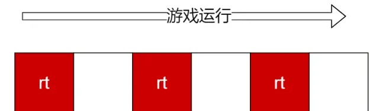
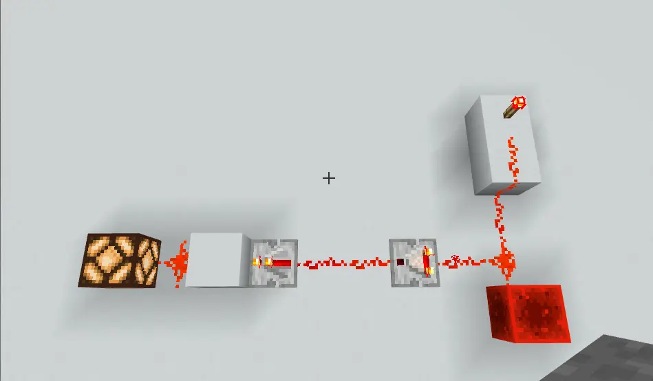
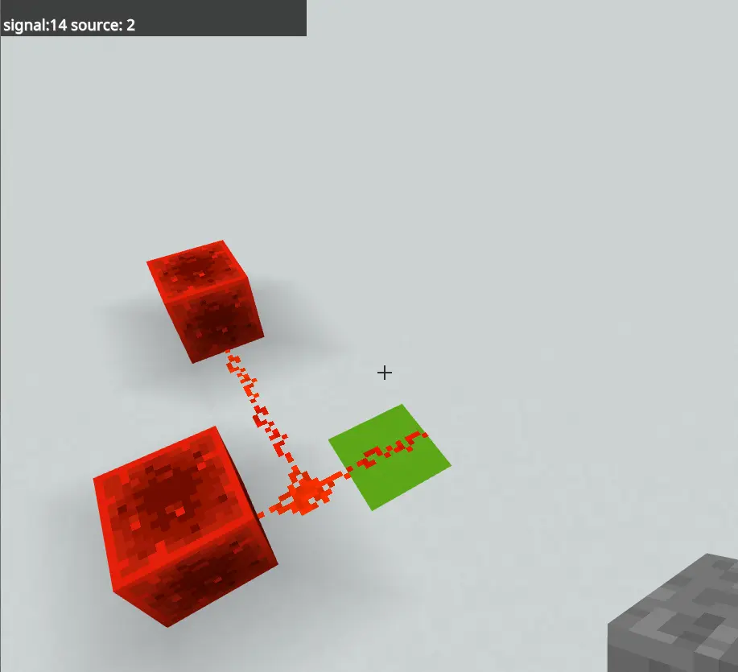
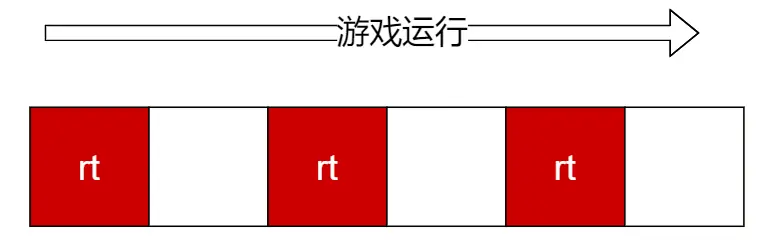
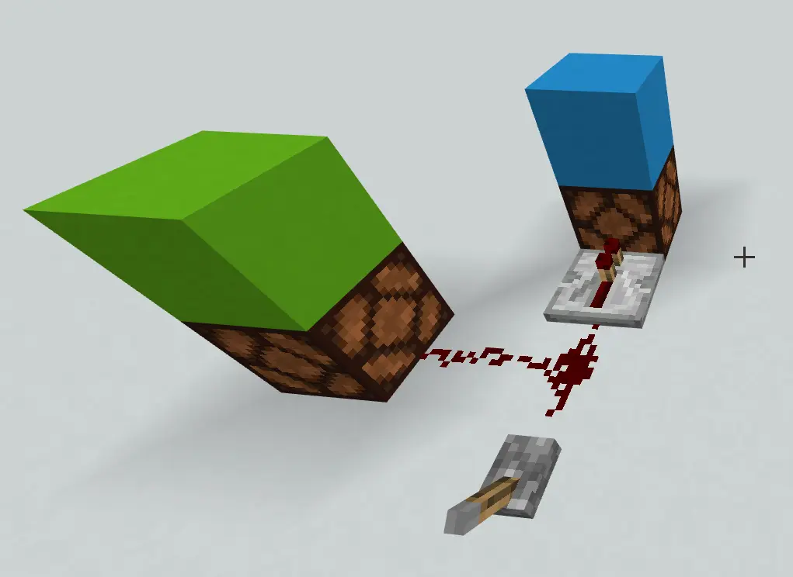
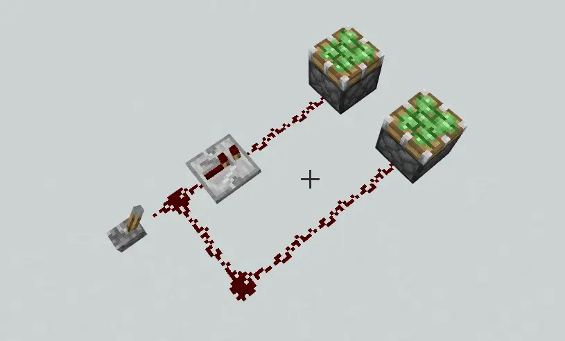

前言
MCBE的红石系统已经出了五年了，在此之后出现了很多优秀的玩家和优秀作品，在众多玩家的努力之下也产生了一个十分完善的基于实践和经验的理论体系。但是遗憾的是纯理论的源码级的分析还几乎是空白。在这篇专栏(系列)中我尝试着填补空白，尽量完成这一工作，并随时弃坑。
有一说一，我自己连33门都不会做，所以这篇专栏几乎可以说出自云玩家之 手，请谨慎观看(
预备知识：
红石原件分类
在游戏内部，红石原件的分类是这样一个树形结构，这也是整个红石系统运行的基础，详细信息见表。
BaseCircuitComponent CSSC BaseRailTransporter MCPR ProducerComponent CapacitorComponent CSCA ComparatorCapacitor PulseCapacitor RedstoneTorchCapacitor ConsumerComponent CSCC PistonConsumer PoweredBlockComponent CSPB ProducerComponent CSPC TransporterComponent CSTR
看不懂英语不用管，看下面的几条就行了：
红石原件的信号源(Source)
信号源
这里先要给出一个概念叫做信号源，说白了就是给该原件提供红石能量的原件。我们来看个例子：

注意
距离
游戏中每个原件都维护着它自己的所有信号源以及和该信号源的距离。当红石原件发生增删的时候原件就会从重新搜索整个电路找到自己的信号源，并在这个过程中计算出自己和信号源的距离,这个距离在最简单的情况下就是曼哈顿距离减1，当然也会随着红石原件的各种连接细节等等有所调整。这些不是重点就不过多叙述了(也没认真看过)。比如我们打掉右下角的红石块，那么中继器就只有一个信号源--火把了。
红石信号强度的计算
这个算法其实非常简单：
首先计算每个信号源为自己提供的信号强度 ,说白了就是用信号源的信号强度减去信号源和自己的距离。然后从所有信号源提供的信号强度中选择最强的信号作为自己的信号(当然如果这个信号是负数就取0了)。来看个简单的例子：

绿色方块上方的红石线有两个信号源，它和左上方的红石块的距离是3，所以该红石块为它提供的信号强度就是12，而左下侧的红石块的距离是1，提供的信号强度是15 - 1 = 14.最后该红石线的信号强度就是max(12,14) = 14.
开胃小菜完成了后面就是稍微硬核的gt级别的微时序分分析了（
信号更新过程
红石刻
看图说话如下图是游戏的运行，一个方格是1gt，我们把红色的gt称之为红石刻，白色的暂时叫做普通刻。。在这样的gt是会更新红石信号的。两个红石刻之间的间隔也叫红石刻(redstone tick,rt)，易得

信号的更新方式
原件有两种更新方式:
capacitor(比较器，中继器，火把)和红石线是缓存更新的，其它的诸如生产者和消费者都是立即更新的。
1rt做了什么
在游戏内关于红石的1rt做的事情说多其实也不多，一共就下面三件事情(按照顺序)：
为方便理解来举个例子：

然后这一rt结束了，等到下一个gt红石线和两个灯同时亮起(这个渲染细节和红石系统无关)。
？？？
你可能会疑惑为什么两个灯同时亮了，又或者你觉得中继器是有延时的，不会立即更新信号。但是事实就是如此。这个现象是由更新顺序和信号计算计算共同决定的。
再来做个简单练习，分析一下拉下拉杆后的所有原件的信号变化：

未完待续